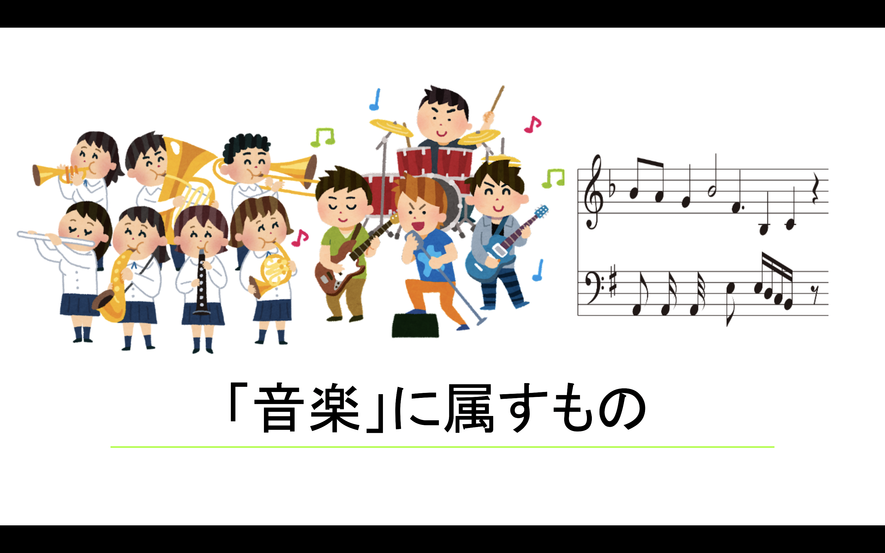
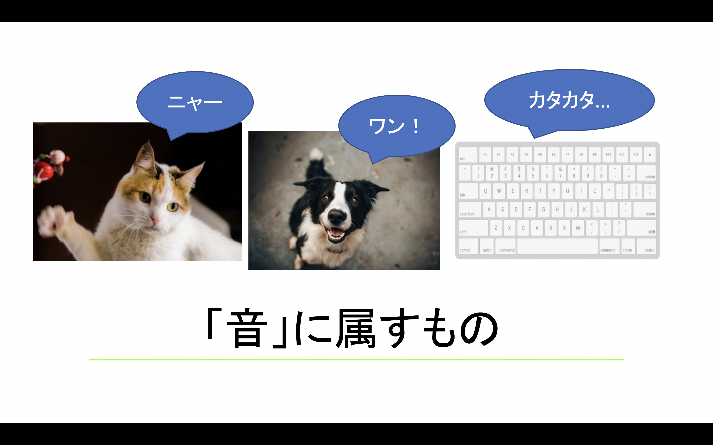
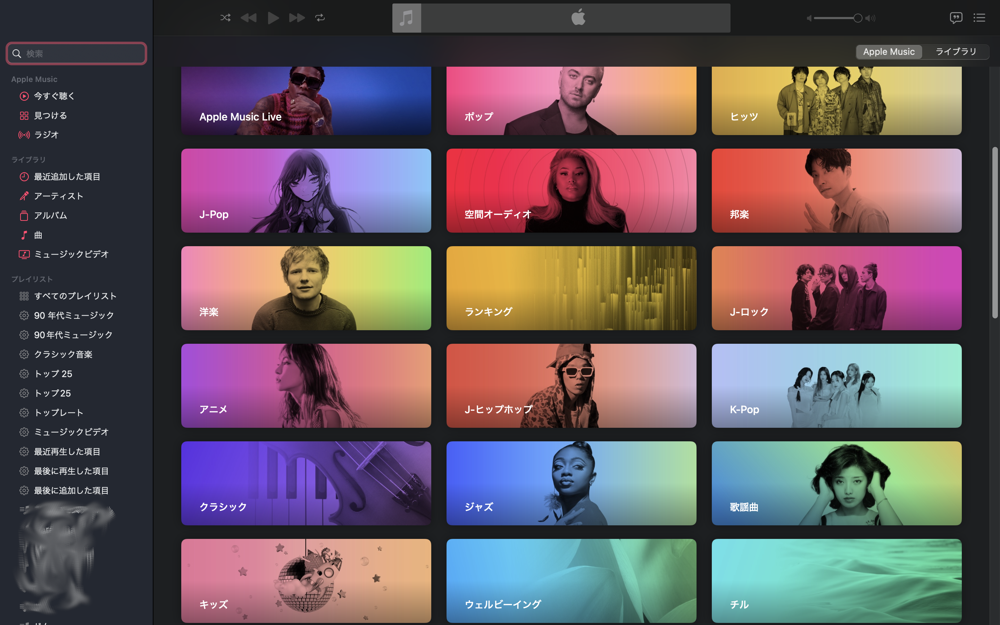

@ eguchi Lab 2022
音楽基礎編
「音楽」って何か？
音楽とは言葉通りに"音を楽しむ"ことで正確には「音による芸術」と呼ばれ、時間の振興の中で一定の法則に基づいた音を組み合わせて
人の聴覚に訴える美を表現する。
また音楽とは、音程をリズムに配置し表現し音を楽しむ事でもある。「曲」や「歌」などの総称としても呼ばれる。
（引用元：コトバンク）
◎「音楽」と「音」の違いは？
"音の連なり（メロディー:melody）" ,"音の重なり（ハーモニー:harmony）","音の鼓動（リズム:rhythm）"を持った
音の構築美であったり快楽をもたらす何かしらの規則性を持った”音の連続体”が「音楽」
それ以外にドレミファソラシドや3拍子,4拍子といった音とリズムを楽譜といったものに書き記すことも「音楽」と呼ぶ。
（例） 音楽に属するもの「吹奏楽」
（音源参考元：甘茶の音楽工房 様）

音の構成は３つあり、"高さ（音波の振動数）","強さ（音波の振幅）","音色（倍音の構成）"の三大要素で定義される。
物の音や犬のワン！という鳴き声、生活音などは「音」という定義を一般的にはされている。
（例） 音に属するもの「猫の鳴き声」
(音源参考元：効果音ラボ 様）
（例） 音に属するもの「犬の鳴き声」
(音源参考元：効果音ラボ 様）
（例） 音に属するもの「キーボードのタイピング音」
(音源参考元：効果音ラボ 様）

◎「音楽」のジャンルとは？
音楽のジャンルには様々なジャンルが存在し、なんと"約1000種類"の音楽ジャンルがあります。
音楽のジャンルには...「リズム」や「テンポ」,使用される「音階」や使われる「楽器」,「発祥地」などの
多くの要素に分類される。
これだけの音楽ジャンルが存在するので各ジャンルごとに影響や刺激し合いながら現在進行形で進化し続けている。

(画像：Apple Music）
基礎１「音符と休符の種類」とは？
音符とは五線譜の中で
① 「音の長さ」
② 「音の高さ」
③ 「音の位置（どのタイミングで鳴るか)」
この３つの意味を伝えるために
音符は形を変えて表現していく。
音符は、どんな音を鳴らすのか という情報であるのに対して、休符は「音をどれだけ鳴らさないのか」を伝えるための
記号（符号）です。
◎ 音符、休符の種類 (「音符」＆「休符」の長さ)

◎ 付点音符、付点休符の種類 (「音符」＆「休符」の長さ)

音符に「点」を追加したものがあります。
この長さは、元の音符(休符)の長さを1.5倍の長さの音符を
付け加えたものになります。
読み方は、「付点○○音符(休符)」です。
基礎2 「五線譜」とは何か？
◎ 五線譜の性質について
「五線譜」は、
・ 音譜が上に書かれれば書かれるほど音が高く
・ 右へ書かれれば書かれるほど曲の頭から演奏されるまでの時間が遠く なります。

◎ 五線譜の基本となる記号について
拍子記号 ➡︎ 拍子は、1小節の中に拍がいくつあるかを表したもの。
1、2、3、4、1、2、3、4… と数える、このビート(リズム)のことを拍という。その曲が何拍子なのか記すのが
拍子記号です。
下の図のようにト音記号の右側に書かれている4/4が
「拍子記号」
分母(下の4)には拍の基準になる音符が書かれ、分子(上の4)には1小節の中に入る拍の数が書かれています。
つまり4/4拍子＝「4分音符が1小節の中に4つ入る」という意味になります。

※ ヘ音記号は、ト音記号よりも低い部分を五線譜に表すために用いられる記号です。
基礎3 「音階」とは何か？
音階とは、12種類の高さの音を、あるルールに沿って抜き出して並べたもの。
別名 "スケール(scale)" とも呼ばれる。
ある楽曲について見た際、その楽曲の中心となる音だけを1オクターブ分抜き出して低い音から高い音へ
順番に並べたもの"長音階","半音階"などのことを指す。
◎ 12種類の高さの音について、ドの音からスタートして「全音・全音・半音・全音・全音・全音・半音ずつ」
進んだ音を順番に並べると・・・・
（例） へ音記号の ドレミファソラシド
(音源作成者：松山）
（例） ト音記号の ドレミファソラシド
(音源作成者：松山）

上の画像のようなルールによる音の並べ方を、
「長音階」 と呼びます。
◎ 次に、12種類の音を「半音ずつ順番に」並べてみると・・・
（例） 半音階のドレミファソラシド
(音源作成者：松山）

上の画像のようなルールによる音の並べ方を、
「半音階」 と呼びます。
参考文献：
・「今さら聞けない音楽の基礎」動画で誰でも分かる初心者講座
https://www.music-basic.net/score/lesson_8.html
・ヤマハ音楽
https://qr.paps.jp/e86xw
・MUSICLIFE.JP
https://musiclife.jp/music/beginner.php